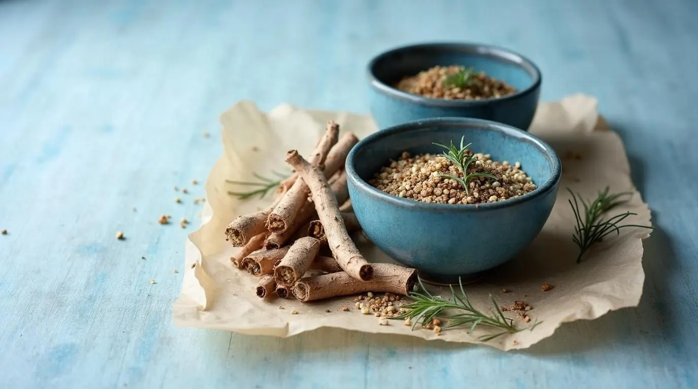
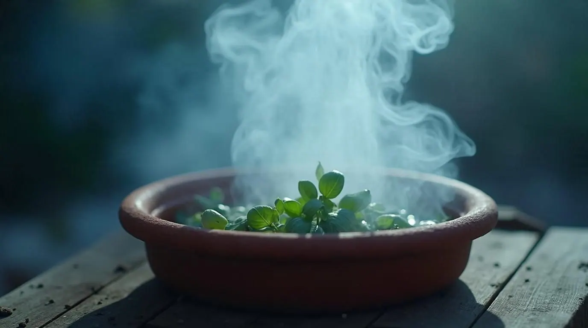
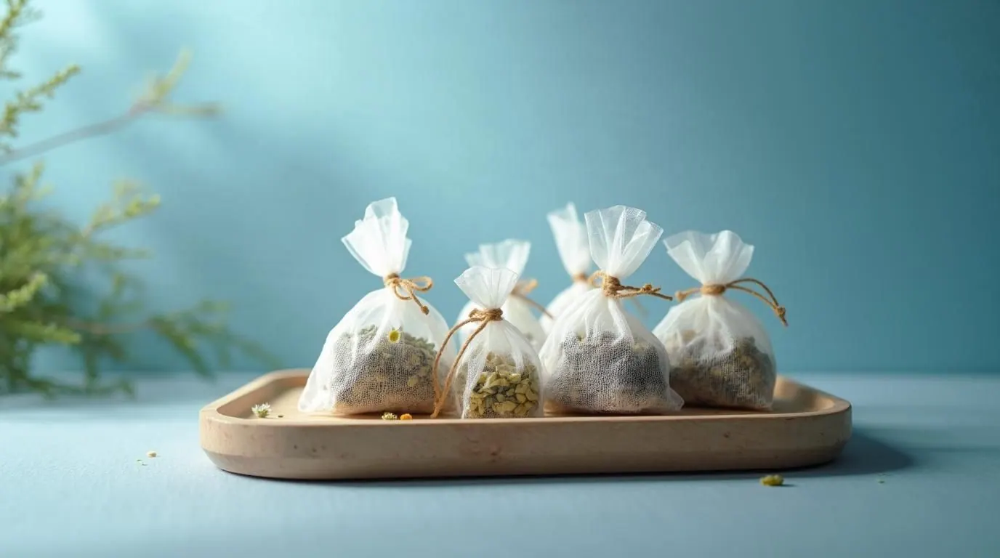

한약은 한 사람의 몸 상태와 그 시기의 생활을 보고 정한 처방이라 가족과 나눠 먹는 것은 권하지 않고, 남은 봉지는 보관 상태와 기간을 먼저 확인한 뒤 한의원과 상의해 이어 먹을지를 정합니다.
여쭙는 것
- 남은 한약을 처방받은 날은 언제쯤인가요? 봉지나 상자에 적힌 날짜가 있다면 함께 알…
- 남은 봉지는 몇 개이고, 지금까지 어디에 보관하셨나요? 냉장고 안쪽인지, 문 쪽인지…
- 한약을 중간에 멈춘 이유는 무엇이었나요? 바빠서인지, 속이 불편해서인지, 감기 같은…
생활에서 해 볼 것
- 첫째, 날짜를 확인합니다. 상자나 봉지에 적힌 조제일 또는 받은 날짜를 찾고, 처방…
- 둘째, 보관 장소를 떠올립니다. 받은 날부터 냉장고 안쪽에 두었는지, 중간에 실온에…
- 셋째, 봉지 겉모양을 봅니다. 봉지가 부풀어 올랐거나, 이음매에서 새어 나온 흔적이…
한의원에서 함께 살필 것
- 남은 한약을 이어 먹어도 될지, 몸 상태를 다시 보고 정해야 할지 판단이 필요한 경우
- 한약을 먹다가 불편한 점이 생겨 멈췄고, 그 이유를 함께 살펴야 하는 경우
- 가족도 비슷한 증상이 있어 각자에게 맞는 방법을 상담받고 싶은 경우
먼저 확인이 필요한 신호
- 한약을 먹은 뒤 구토나 설사가 멈추지 않는 경우
- 두드러기, 눈이나 입술 붓기, 숨이 차는 느낌이 생긴 경우
- 피부나 눈 흰자가 노래지거나 소변 색이 진한 갈색으로 바뀐 경우
바쁜 일정이나 감기, 여행 때문에 한약이 몇 봉지씩 남는 일은 흔합니다. 이때 "아까우니 비슷한 증상이 있는 가족이 먹으면 어떨까", "작년에 남은 한약을 올겨울에 다시 먹어도 될까" 하고 물으시는 분이 많습니다. 짧게 답하면, 한약은 먹는 사람 한 분의 진맥과 이야기를 바탕으로 정한 처방이라 가족과 나눠 먹는 것은 권하지 않습니다. 본인이 남긴 한약도 받은 지 얼마나 지났는지, 어떻게 보관했는지, 지금 몸 상태가 처방받을 때와 비슷한지를 먼저 확인한 뒤 이어 먹을지를 정하는 것이 순서입니다. 판단이 어렵다면 남은 봉지를 그대로 두고 좋은꿈참사랑한의원에 전화로 여쭈어 주세요.
왜 나눠 먹거나 오래 두었다 먹는 것을 조심하나요
- 같은 소화불량, 같은 피로라도 사람마다 몸이 차고 더운 정도, 땀과 변의 상태, 맥의 흐름이 다릅니다. 그래서 같은 증상 이름이라도 처방이 사람마다 달라지는 경우가 많습니다.
- 가족은 생활 환경이 비슷해 증상도 닮아 보이지만, 나이, 복용 중인 약, 임신과 수유 여부, 지병이 다르면 같은 한약이 맞지 않을 수 있습니다.
- 한약은 처방받은 시기의 몸 상태와 계절, 생활 리듬을 함께 보고 정합니다. 몇 달이 지나 몸 상태가 달라졌다면 같은 한약이 지금도 맞는지 다시 살펴야 합니다.
- 파우치에 담긴 한약도 시간이 지나면 보관 온도와 빛, 개봉 여부에 따라 맛과 냄새, 상태가 달라질 수 있습니다.
- 냉장고 문을 자주 여닫거나 실온에 오래 두었던 봉지는 겉보기에 멀쩡해도 속 상태를 장담하기 어렵습니다.
- 어린이나 어르신은 같은 한약이라도 양과 먹는 방법을 따로 정해야 하는 경우가 많아, 어른 몫을 나눠 드리는 것은 피하는 것이 좋습니다.

먼저 이렇게 여쭙니다
- 남은 한약을 처방받은 날은 언제쯤인가요? 봉지나 상자에 적힌 날짜가 있다면 함께 알려 주세요.
- 남은 봉지는 몇 개이고, 지금까지 어디에 보관하셨나요? 냉장고 안쪽인지, 문 쪽인지, 실온인지 여쭙니다.
- 한약을 중간에 멈춘 이유는 무엇이었나요? 바빠서인지, 속이 불편해서인지, 감기 같은 다른 일이 있었는지가 중요합니다.
- 멈춘 뒤 지금까지 몸 상태는 어떻게 달라졌나요?
- 처방받을 때 상담했던 증상이 지금도 이어지고 있나요?
- 그사이 새로 먹기 시작한 약이나 영양제가 있나요?
- 가족에게 주려는 경우라면, 그 가족의 나이와 지금 불편한 점, 먹고 있는 약을 알려 주세요. 다만 그분께는 따로 진료를 권해 드립니다.
- 지난번 진료에서 나눈 이야기와 이번 변화를 이어서 함께 봅니다.
일상에서 먼저 해 볼 수 있는 것
남은 한약을 발견했을 때 바로 데워 드시기보다 아래 순서로 한 번 점검해 보세요. 5분이면 충분합니다.
- 첫째, 날짜를 확인합니다. 상자나 봉지에 적힌 조제일 또는 받은 날짜를 찾고, 처방받을 때 들은 보관 기간과 비교합니다. 들은 기간이 기억나지 않으면 전화로 확인해 주세요.
- 둘째, 보관 장소를 떠올립니다. 받은 날부터 냉장고 안쪽에 두었는지, 중간에 실온에 며칠 두었는지, 여행 가방에 넣어 다녔는지를 적어 둡니다.
- 셋째, 봉지 겉모양을 봅니다. 봉지가 부풀어 올랐거나, 이음매에서 새어 나온 흔적이 있거나, 끈적한 자국이 있으면 드시지 않습니다.
- 넷째, 한 봉지를 따서 그릇에 부어 봅니다. 평소와 다른 시큼한 냄새, 거품, 실 같은 덩어리, 표면의 막이 보이면 드시지 않고 남은 봉지도 함께 확인합니다.
- 다섯째, 이상이 없어 보여도 처방받은 지 오래되었거나 그사이 몸 상태가 달라졌다면 먼저 한의원에 전화로 남은 봉지 수와 상황을 알려 주세요.
- 여섯째, 이어 먹기로 정했다면 첫날은 평소처럼 한 봉지만 드시고, 속 편안함과 변 상태를 하루 동안 살펴봅니다. 남은 양을 빨리 끝내려고 하루에 여러 봉지를 몰아 드시지 않습니다.
- 일곱째, 앞으로는 한약 상자에 받은 날짜와 "하루 ○번" 같은 복용 방법을 크게 적어 두면 다음에 남았을 때 판단이 쉬워집니다.

상황별 예시
예를 들어 감기에 걸려 일주일가량 한약을 쉬었고 냉장고에 열 봉지 정도 남은 경우가 있습니다. 감기가 나은 뒤 원래 상담했던 증상이 그대로라면 보관 상태를 확인하고 한의원과 통화한 뒤 이어 드시는 경우가 많습니다. 다만 감기 뒤 입맛이나 잠이 크게 달라졌다면 다시 방문해 진맥으로 살피고 정하는 편이 좋습니다.
예를 들어 작년 겨울에 처방받아 다 먹지 못한 한약이 냉장고 깊숙이 남아 있는 경우가 있습니다. 해가 바뀌었고 계절도 한 바퀴 돌았기 때문에 몸 상태와 생활이 처방받을 때와 같다고 보기 어렵습니다. 이런 경우에는 남은 한약을 드시기보다 지금 상태로 다시 상담받으시는 것을 권합니다.
예를 들어 배우자가 소화가 잘 안 된다며 "당신 먹던 소화 한약 몇 봉지 나눠 먹으면 안 되느냐"고 묻는 경우가 있습니다. 겉으로는 같은 더부룩함이라도 원인과 몸의 바탕이 다를 수 있고, 배우자가 먹고 있는 약과 겹칠 수도 있습니다. 나눠 드리기보다 배우자분도 따로 진찰을 받아 그분에게 맞는 방법을 정하시는 것이 좋습니다.
예를 들어 아이가 감기 기운이 있을 때 어른이 먹던 한약을 조금 덜어 주면 어떨까 고민하는 경우도 있습니다. 아이는 몸무게와 나이에 따라 양과 먹는 방법을 따로 정해야 하고, 어른 처방에 들어간 약재가 아이에게 맞는지도 따로 살펴야 하므로 나눠 주지 않습니다.
자주 하시는 오해
- 한약은 끓여서 만든 것이라 상하지 않는다고 생각하시는 분이 있습니다. 끓여 담았더라도 보관 온도와 기간, 개봉 여부에 따라 상태가 달라질 수 있습니다.
- 냉동하면 오래 두어도 괜찮다고 생각하시는 분도 있습니다. 처방받을 때 따로 안내받지 않았다면 임의로 얼렸다 녹여 드시기보다 한의원에 먼저 여쭈어 주세요.
- 증상이 같으니 가족에게도 맞을 것이라고 생각하기 쉽습니다. 증상 이름이 같아도 처방은 사람마다 다른 경우가 많습니다.
- 남은 한약을 빨리 끝내면 효과가 더 날 것이라 여겨 몰아서 드시는 분도 있습니다. 하루 양을 늘리는 것은 속을 불편하게 할 수 있어 권하지 않습니다.

스스로 점검해 보세요
- 남은 한약을 받은 날짜를 정확히 모른다.
- 보관하는 동안 실온에 하루 이상 둔 적이 있다.
- 봉지가 부풀었거나 새어 나온 흔적이 있다.
- 데웠을 때 평소와 다른 냄새나 거품이 있었다.
- 한약을 멈춘 이유가 속 불편함이나 피부 변화 때문이었다.
- 멈춘 뒤 새로 먹기 시작한 약이나 영양제가 있다.
- 처방받을 때 상담한 증상이 지금은 많이 달라졌다.
- 가족이나 아이에게 나눠 주려고 생각하고 있다.
한 가지라도 해당한다면 데워 드시기 전에 한의원에 전화로 먼저 확인해 주세요.
한의원에서 함께 살필 수 있는 경우
- 남은 한약을 이어 먹어도 될지, 몸 상태를 다시 보고 정해야 할지 판단이 필요한 경우
- 한약을 먹다가 불편한 점이 생겨 멈췄고, 그 이유를 함께 살펴야 하는 경우
- 가족도 비슷한 증상이 있어 각자에게 맞는 방법을 상담받고 싶은 경우
- 일정이 불규칙해 한약이 자주 남는 생활이라 복용 시간을 다시 정해야 하는 경우
- 계절이 바뀌어 지난번과 다른 불편함이 생긴 경우
좋은꿈참사랑한의원에서는 다시 방문하시면 지난번 처방과 그때 나눈 이야기를 기록에서 먼저 확인하고, 한약을 멈춘 이유와 그 뒤의 변화를 이어서 여쭙니다. 그다음 모든 분께 진맥을 하며 처방받을 때와 비교해 몸 전체의 리듬이 어떻게 달라졌는지 살피고, 혀와 배의 상태도 필요하면 함께 봅니다. 가족이 함께 오신 경우에도 한 분씩 따로 진찰하고 각자의 생활과 마음 상태까지 들은 뒤 정합니다. 한약은 원내에서 탕전하고, 약재는 이종호 대표원장이 직접 검수합니다. 이종호 대표원장을 비롯해 조영기 원장, 정원영 원장이 같은 방식으로 진료합니다.

지켜볼 기준과 바로 진료가 필요한 신호
- 이어 먹기로 정했다면 처음 2~3일 동안 속쓰림, 더부룩함, 묽은 변, 피부 가려움이 생기지 않는지 살펴봅니다.
- 이런 불편함이 이틀 넘게 이어지면 한약을 멈추고 남은 봉지와 함께 한의원에 알려 주세요.
- 상태가 의심스러운 한약을 이미 한 봉지 드셨다면 그날은 더 드시지 말고 배 상태를 지켜보세요.
- 먹은 뒤 몇 시간 안에 구토와 설사가 반복되거나, 열이 나거나, 두드러기와 입술 붓기, 숨찬 느낌이 생긴다면 바로 병원 진료를 받으세요.
이렇게 기록해 오시면 상담이 쉬워집니다
- 남은 한약을 받은 날짜와 남은 봉지 수
- 보관한 장소와 중간에 실온에 둔 기간
- 한약을 멈춘 날짜와 이유
- 멈춘 뒤 달라진 증상, 잠, 식사, 변의 변화
- 새로 먹기 시작한 약과 영양제의 이름
- 가족 상담을 원하신다면 가족 각자의 불편한 점과 먹고 있는 약 목록

이런 증상은 먼저 확인이 필요합니다
- 한약을 먹은 뒤 구토나 설사가 멈추지 않는 경우
- 두드러기, 눈이나 입술 붓기, 숨이 차는 느낌이 생긴 경우
- 피부나 눈 흰자가 노래지거나 소변 색이 진한 갈색으로 바뀐 경우
- 심한 복통이나 열이 함께 있는 경우
- 아이가 어른 한약을 잘못 먹은 경우
이런 경우에는 남은 한약을 더 드시지 말고 병원에서 먼저 확인하세요. 진료받으실 때 드신 한약 봉지를 가져가시면 도움이 됩니다. 평소 복용 중인 약은 처방한 의사와 상의 없이 줄이거나 끊지 않습니다. 숨쉬기 어렵거나 의식이 흐려진다면 119에 바로 연락하세요.
함께 읽으면 좋은 글
- 받아 온 한약은 어떻게 보관하고 데워서 먹으면 되나요?
- 같은 병인데 한약 처방이 사람마다 다른 이유는 무엇인가요?
- 한약을 먹다가 속이 불편하거나 피부에 이상이 생기면 어떻게 알려야 하나요?
한눈에 보는 표
| 구분 | 핵심 |
|---|---|
| 여쭙는 것 | 남은 한약을 처방받은 날은 언제쯤인가요? 봉지나 상자에 적힌 날짜가 있다면 함께 알려 주세요. 남은 봉지는 몇 개이고, 지금까지 어디에 보관하셨나요? 냉장고 안쪽인지, 문 쪽인지, 실온인지 여쭙니다. |
| 생활에서 해 볼 것 | 첫째, 날짜를 확인합니다. 상자나 봉지에 적힌 조제일 또는 받은 날짜를 찾고, 처방받을 때 들은 보관 기간과 비교합니다. 들은 기간이 기억나지 않으면 전화로 확인해 주세요. 둘째, 보관 장소를 떠올립니다. 받은 날부터 냉장고 안쪽에 두었는지, 중간에 실온에 며칠 두었는지, 여행 가방에 넣어 다녔는지를 적어 둡니다. |
| 한의원에서 함께 살필 것 | 남은 한약을 이어 먹어도 될지, 몸 상태를 다시 보고 정해야 할지 판단이 필요한 경우 한약을 먹다가 불편한 점이 생겨 멈췄고, 그 이유를 함께 살펴야 하는 경우 |
| 먼저 확인이 필요한 신호 | 한약을 먹은 뒤 구토나 설사가 멈추지 않는 경우 두드러기, 눈이나 입술 붓기, 숨이 차는 느낌이 생긴 경우 |
자주 묻는 질문
남은 한약은 얼마나 두었다 먹어도 되나요?
처방과 보관 방법에 따라 안내가 다를 수 있어 받을 때 들은 기간을 따르시는 것이 먼저입니다. 기억나지 않거나 기간이 지났다면 드시기 전에 02-815-7510으로 확인해 주세요.
부모님도 저와 같은 증상인데 제 한약을 드려도 될까요?
권하지 않습니다. 나이, 지병, 드시는 약에 따라 맞는 처방이 달라질 수 있어 부모님도 따로 진찰받으시는 것이 좋습니다.
냉장고에 넣어 두었으면 괜찮지 않나요?
냉장 보관이 기본이지만 기간과 개봉 여부, 중간에 실온에 둔 적이 있는지도 함께 봐야 합니다. 봉지가 부풀었거나 냄새가 다르면 드시지 마세요.
다시 방문하지 않고 전화로만 이어 먹을지 정할 수 있나요?
기간과 몸 상태에 따라 전화로 안내드릴 수 있는 경우도 있지만, 처방받은 지 오래되었거나 증상이 달라졌다면 다시 진맥하고 살피는 편을 권합니다.
언제 방문하면 되나요?
평일은 오전 9시 30분부터 오후 8시까지(점심 13:00~14:00), 토·일·공휴일은 오전 9시 30분부터 오후 3시까지 점심시간 없이 진료합니다. 남은 한약 봉지를 한두 개 가져오시면 상담에 도움이 됩니다.
이 글은 일반적인 건강 정보이며 개인의 진단이나 치료를 대신하지 않습니다. 증상이 있거나 복용 중인 약이 있다면 진료를 통해 확인하세요. 치료 효과는 개인마다 다를 수 있습니다.
작성 기준: 일반적으로 알려져 있는 건강 정보를 참고해 정리했습니다(대표원장 감수). 증상 기록은 1~2주 동안 하루 1회, 비슷한 시간에 적어 오시면 지난 상태와 비교하기 쉽습니다.
좋은꿈참사랑한의원은 재진 때 지난번 이야기부터 이어서 여쭙니다. 진료시간과 예약은 오시는 길에서 확인하세요.